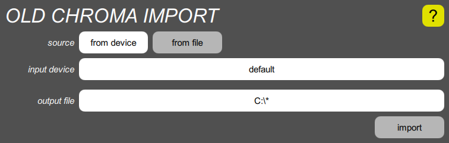
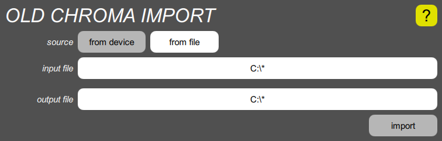

Old Chroma import
The old Chroma provided a crude way to save programs on an audio cassette. Somewhat later, the Syntech Chroma to MIDI Converter provided a cleaner way to convert programs into a MIDI Sysex packet, which could be stored in a computer file. This has become a de facto standard for Chroma program storage. This import tool converts the cassette format into the Syntech Sysex format, after which the Old Chroma convert tool can convert the programs into the Digital Chroma’s format. It can accept input from two sources, depending upon whether the “from device” or “from file” button is selected.
Importing from audio device

Before upgrading your Chroma to a Digital Chroma, you can import the programs it contains by connecting the cassette interface output to the audio input on the computer running the Toolkit. To speed up the process, you should turn on the LOCK switch on the back of the Chroma, so that the programs will be transmitted without two-second gaps between them.
If you have sets of programs already stored on cassettes, you can connect the output of your cassette player to the computer’s audio input instead.
If you need to choose something other than the default audio input on the computer, tap the input device button, and tap the appropriate choice from the popup list.
Next, tap the output file button, use the dialog box to navigate to the folder where you wish to store the Sysex file, enter a file name, and OK the dialog. A .syx extension will be added if you don’t specify one.
Finally, tap the “import” button. A progress bar containing “0 / 0” will appear. This means it has decoded zero out of zero programs received. Press SAVE ALL on the Chroma, or PLAY on the cassette, and you should soon see the progress bar counting the 50 programs. The progress bar also fills in with a pale green color, although any failed program causes a sliver of the bar to turn pink instead.
If you don’t see this activity, you may need to adjust the volume of your cassette, or the input level on your computer. Computers generally provide a way to listen to what’s coming into the line input, to hear if everything’s hooked up correctly. You can abort the operation by tapping the button, which now says “cancel”, and then tap it again to start the import over.
If it doesn’t receive 50 programs, it will stop with the progress bar part way across. If it says “49 / 49” it means it received 49 programs successfully, and the bar will be mostly green. If it says “40 / 44” it means it received 44 programs, but only 40 of them were properly decoded, and there will be some pink slivers showing the bad ones. In any case, you can tap “cancel” to abort the operation, and try again with different settings.
If 50 programs are successfully converted, the operation stops automatically, the progress bar disappears, and the button reverts to “import”. If 50 programs are received but some of them have errors, the progress bar shows a list of the failed programs, and the buttons changes to “dismiss”. You can click the button to dismiss the progress bar, which changes the button back to “import”, after which you can try again. It also copies the list of failed programs (or any other error message) to the clipboard.
Importing from a file

If you have previously used your computer to capture the SAVE ALL output of your Chroma in uncompressed .wav files, or if you’ve received such files from someone else, you can import directly from those files. The tool supports any sample rate from 8KHz to 64KHz, mono or stereo, 8-bit or 16-bit samples. To import from a file, you tap the input file button to select the input file, then tap the output file button to select the output file, and finally tap the “import” button. The progress bar should zip across in a fraction of a second. Errors are handled the same is in the audio input mode.